tikatuwq: From raw water quality data to CONAMA report
tikatuwq developers
Source:vignettes/tikatuwq-workflow.Rmd
tikatuwq-workflow.RmdIntroduction
The tikatuwq package provides a reproducible workflow for Brazilian water quality assessment. It implements common indices such as the IQA/WQI and Carlson or Lamparelli trophic state indices, together with CONAMA 357/2005 compliance checks, plotting helpers and basic reporting tools.
The package now includes a real dataset containing water quality measurements collected by INEMA (Environmental Agency of Bahia) during monitoring campaigns between 2021 and 2024 in the Rio Buranhem watershed, Porto Seguro, Bahia, Brazil. This dataset is included for demonstration and reproducibility purposes, closely following the analytical workflow presented in this vignette. All variable names correspond to real monitoring attributes.
In this vignette we demonstrate a typical pipeline: reading a raw CSV file, handling censored values (ND / <LD / <LOQ), cleaning units, computing indices, checking legal compliance and generating simple plots and a textual report. The goal is to show an end-to-end example that users can adapt to their own datasets.
This workflow is particularly useful for environmental monitoring programs that need to comply with Brazilian regulations and produce standardized reports for regulatory agencies.
Package overview and included real data
We start by loading the package and examining the included real dataset from Buranhem River/INEMA:
library(tikatuwq)
library(dplyr)
data("wq_demo", package = "tikatuwq")
# Inspect structure
str(wq_demo)
#> tibble [20 × 14] (S3: tbl_df/tbl/data.frame)
#> $ rio : chr [1:20] "BURANHEM" "BURANHEM" "BURANHEM" "BURANHEM" ...
#> $ ponto : chr [1:20] "FBS-BRH-250" "FBS-BRH-250" "FBS-BRH-250" "FBS-BRH-250" ...
#> $ data : Date[1:20], format: "2020-03-03" "2022-03-10" ...
#> $ ph : num [1:20] 6.52 6.97 8.19 7.55 7.8 6.39 5.87 8.53 7.08 8.1 ...
#> $ od : num [1:20] 6.03 6.52 6.13 5.96 7.58 6.7 6.51 6.19 7.51 7.3 ...
#> $ turbidez : num [1:20] 63.5 18.3 9 112 5.8 11.4 68.6 10.4 141 5.4 ...
#> $ dbo : num [1:20] 3 3 4 3 3 7 4 4 3 3 ...
#> $ coliformes : num [1:20] 7.9 9.2 7.9 1.7 2.3 1.3 5.4 2.3 1.6 7.9 ...
#> $ p_total : num [1:20] 0.02 0.04 0.02 0.08 0.02 0.03 0.03 0.02 0.1 0.03 ...
#> $ nt_total : num [1:20] 1 1 1 1.9 1 1 1 1 1.8 1 ...
#> $ temperatura: num [1:20] 30.1 26.5 27.4 30.1 29.1 28.7 25.8 25.5 26.7 28.6 ...
#> $ tds : num [1:20] 119 51 50 50 50 60 68 52 50 52 ...
#> $ lat : num [1:20] -16.4 -16.4 -16.4 -16.4 -16.4 ...
#> $ lon : num [1:20] -39.6 -39.6 -39.6 -39.6 -39.6 ...
head(wq_demo)
#> # A tibble: 6 × 14
#> rio ponto data ph od turbidez dbo coliformes p_total nt_total
#> <chr> <chr> <date> <dbl> <dbl> <dbl> <dbl> <dbl> <dbl> <dbl>
#> 1 BURAN… FBS-… 2020-03-03 6.52 6.03 63.5 3 7.9 0.02 1
#> 2 BURAN… FBS-… 2022-03-10 6.97 6.52 18.3 3 9.2 0.04 1
#> 3 BURAN… FBS-… 2023-05-24 8.19 6.13 9 4 7.9 0.02 1
#> 4 BURAN… FBS-… 2024-02-20 7.55 5.96 112 3 1.7 0.08 1.9
#> 5 BURAN… FBS-… 2024-09-04 7.8 7.58 5.8 3 2.3 0.02 1
#> 6 BURAN… FBS-… 2020-03-04 6.39 6.7 11.4 7 1.3 0.03 1
#> # ℹ 4 more variables: temperatura <dbl>, tds <dbl>, lat <dbl>, lon <dbl>The wq_demo dataset contains 20 rows and 14 columns,
including: - rio: river name (BURANHEM) -
ponto: monitoring point identifier - data:
sampling date - ph, od, turbidez,
dbo: water quality parameters - coliformes:
fecal coliforms - p_total, nt_total:
phosphorus and nitrogen - temperatura, tds:
temperature and total dissolved solids - lat,
lon: coordinates
Reading and validating water quality data
The first step in any analysis is reading the raw data. The
read_wq() function handles common CSV formats with robust
parsing:
# Example: reading from a CSV file
# df <- read_wq("path/to/your/data.csv")For this vignette, we use the demo dataset. In practice,
read_wq() handles: - Comma or semicolon delimiters - Comma
or dot decimal separators - Unit suffixes in numeric columns (e.g.,
“0.04 mg/L”) - Date formats (YYYY-MM-DD or DD/MM/YYYY) - Coordinate
normalization if needed
Next, we validate that required columns are present:
df <- wq_demo
# Validate required columns
df <- validate_wq(df)
# Check structure
str(df)
#> tibble [20 × 14] (S3: tbl_df/tbl/data.frame)
#> $ rio : chr [1:20] "BURANHEM" "BURANHEM" "BURANHEM" "BURANHEM" ...
#> $ ponto : chr [1:20] "FBS-BRH-250" "FBS-BRH-250" "FBS-BRH-250" "FBS-BRH-250" ...
#> $ data : Date[1:20], format: "2020-03-03" "2022-03-10" ...
#> $ ph : num [1:20] 6.52 6.97 8.19 7.55 7.8 6.39 5.87 8.53 7.08 8.1 ...
#> $ od : num [1:20] 6.03 6.52 6.13 5.96 7.58 6.7 6.51 6.19 7.51 7.3 ...
#> $ turbidez : num [1:20] 63.5 18.3 9 112 5.8 11.4 68.6 10.4 141 5.4 ...
#> $ dbo : num [1:20] 3 3 4 3 3 7 4 4 3 3 ...
#> $ coliformes : num [1:20] 7.9 9.2 7.9 1.7 2.3 1.3 5.4 2.3 1.6 7.9 ...
#> $ p_total : num [1:20] 0.02 0.04 0.02 0.08 0.02 0.03 0.03 0.02 0.1 0.03 ...
#> $ nt_total : num [1:20] 1 1 1 1.9 1 1 1 1 1.8 1 ...
#> $ temperatura: num [1:20] 30.1 26.5 27.4 30.1 29.1 28.7 25.8 25.5 26.7 28.6 ...
#> $ tds : num [1:20] 119 51 50 50 50 60 68 52 50 52 ...
#> $ lat : num [1:20] -16.4 -16.4 -16.4 -16.4 -16.4 ...
#> $ lon : num [1:20] -39.6 -39.6 -39.6 -39.6 -39.6 ...The validate_wq() function ensures that the minimal set
of columns required for IQA calculation and CONAMA checks is
present.
Handling censored values (ND / <LD / <LOQ)
Water quality data often contains censored values, where concentrations are below the detection limit. The tikatuwq package provides explicit handling for these cases.
# Example with censored values
# If your CSV contains values like "<0.01", "<LD", or "ND", read_wq() handles them
# with the nd_policy parameter:
# df_with_nd <- read_wq("data.csv", nd_policy = "ld2")The nd_policy parameter accepts four options: -
"ld2" (default): uses half of the detection limit -
"ld": uses the detection limit value - "zero":
replaces with 0 - "na": replaces with NA
For this demo, the dataset does not contain censored values, but in
real data you would see them parsed automatically when using
read_wq().
Cleaning units and basic QA/QC
The clean_units() function validates parameter ranges
and can convert units if specified:
# Clean and validate units
df_clean <- clean_units(df)
# If units need conversion (e.g., ug/L to mg/L for phosphorus):
# df_clean <- clean_units(df, units_map = list(p_total = "ug/L"))The function: - Validates typical ranges (pH, OD, turbidity, etc.) -
Warns about outliers - Converts units when units_map is
provided
Computing indices (IQA and trophic state)
Water Quality Index (IQA)
The IQA combines multiple parameters into a single score (0-100):
# Compute IQA
df_iqa <- iqa(df_clean, na_rm = TRUE)
# View results
head(df_iqa[, c("ponto", "IQA", "IQA_status")])
#> # A tibble: 6 × 3
#> ponto IQA IQA_status
#> <chr> <dbl> <ord>
#> 1 FBS-BRH-250 89.8 Boa
#> 2 FBS-BRH-250 93.1 Otima
#> 3 FBS-BRH-250 92.2 Otima
#> 4 FBS-BRH-250 87.6 Boa
#> 5 FBS-BRH-250 95.7 Otima
#> 6 FBS-BRH-300 89.3 Boa
# Summary
summary(df_iqa$IQA)
#> Min. 1st Qu. Median Mean 3rd Qu. Max.
#> 85.35 89.18 91.91 91.35 93.88 95.72
table(df_iqa$IQA_status)
#>
#> Muito ruim Ruim Regular Boa Otima
#> 0 0 0 8 12The IQA_status column provides qualitative
classification (Very Poor, Poor, Fair, Good, Excellent).
Trophic State Index (IET)
For lakes and reservoirs, trophic state indices indicate eutrophication level:
# Carlson IET (requires secchi depth, chlorophyll, total phosphorus)
# df_iet <- iet_carlson(df, .keep_ids = TRUE)
# Lamparelli IET
# df_iet <- iet_lamparelli(df, .keep_ids = TRUE)Note: IET functions require specific parameters (secchi depth,
chlorophyll) that are not in wq_demo. Use them when
analyzing lentic (still water) systems.
Checking CONAMA 357/2005 compliance
The CONAMA Resolution 357/2005 establishes limits for water quality parameters according to water use classes (1-4 and special). The package provides several functions to check compliance:
# Check compliance for class 2 (default)
df_conama <- conama_check(df_iqa, classe = "2")
# View compliance columns (one per parameter)
head(df_conama[, grep("_ok$", names(df_conama))])
#> # A tibble: 6 × 6
#> ph_ok od_ok turbidez_ok dbo_ok coliformes_ok p_total_ok
#> <lgl> <lgl> <lgl> <lgl> <lgl> <lgl>
#> 1 TRUE TRUE TRUE TRUE TRUE TRUE
#> 2 TRUE TRUE TRUE TRUE TRUE TRUE
#> 3 TRUE TRUE TRUE TRUE TRUE TRUE
#> 4 TRUE TRUE FALSE TRUE TRUE FALSE
#> 5 TRUE TRUE TRUE TRUE TRUE TRUE
#> 6 TRUE TRUE TRUE FALSE TRUE TRUESummary and reports
# Long-format summary
summary_long <- conama_summary(df_conama, classe = "2")
head(summary_long)
#> # A tibble: 6 × 7
#> parametro valor lim_min lim_max status ok delta
#> <chr> <dbl> <dbl> <dbl> <chr> <lgl> <dbl>
#> 1 ph 6.52 6 9 ok TRUE 0
#> 2 ph 6.97 6 9 ok TRUE 0
#> 3 ph 8.19 6 9 ok TRUE 0
#> 4 ph 7.55 6 9 ok TRUE 0
#> 5 ph 7.8 6 9 ok TRUE 0
#> 6 ph 6.39 6 9 ok TRUE 0
# Report table (violations only, formatted)
report_tab <- conama_report(df_conama, classe = "2", only_violations = TRUE, pretty = TRUE)
print(report_tab)
#> # A tibble: 11 × 6
#> parametro valor lim_min lim_max status delta
#> <chr> <chr> <chr> <chr> <chr> <chr>
#> 1 dbo 7 NA 5 acima_do_maximo +2
#> 2 dbo 6 NA 5 acima_do_maximo +1
#> 3 od 4,9 5 NA abaixo_do_minimo -0,09
#> 4 p_total 0,08 NA 0,05 acima_do_maximo +0,03
#> 5 p_total 0,1 NA 0,05 acima_do_maximo +0,05
#> 6 p_total 0,1 NA 0,05 acima_do_maximo +0,05
#> 7 p_total 0,06 NA 0,05 acima_do_maximo +0,010
#> 8 p_total 0,09 NA 0,05 acima_do_maximo +0,04
#> 9 ph 5,9 6 9 abaixo_do_minimo -0,13
#> 10 turbidez 112 NA 100 acima_do_maximo +12
#> 11 turbidez 141 NA 100 acima_do_maximo +41
# Textual summary
summary_text <- conama_text(df_conama, classe = "2", only_violations = TRUE)
cat(summary_text, sep = "\n")
#> Conformidade CONAMA classe 2:
#> - dbo: 2/20 violacoes (ex.: valor=7 (lim_max=5 delta=+2))
#> - od: 1/20 violacoes (ex.: valor=4,9 (lim_min=5 delta=-0,09))
#> - p_total: 5/20 violacoes (ex.: valor=0,1 (lim_max=0,05 delta=+0,05))
#> - ph: 1/20 violacoes (ex.: valor=5,9 (lim_min=6 lim_max=9 delta=-0,13))
#> - turbidez: 2/20 violacoes (ex.: valor=141 (lim_max=100 delta=+41))Generating plots
Time series
# Time series of a parameter
p2 <- plot_series(df_iqa, "turbidez", facet = "ponto")
print(p2)
Heatmap
library(tidyr)
# Reshape to long format
df_long <- df_iqa %>%
dplyr::select(data, ponto, turbidez, od, dbo, ph) %>%
pivot_longer(cols = c(turbidez, od, dbo, ph),
names_to = "parametro",
values_to = "valor")
# Heatmap
p4 <- plot_heatmap(df_long)
print(p4)
Generating a textual analysis and report
The generate_analysis() function produces human-readable
paragraphs summarizing water quality:
# Generate analytical text
analysis_text <- generate_analysis(
df_iqa,
classe_conama = "2",
incluir_tendencia = FALSE, # Set TRUE if you have temporal data
contexto = list(river = "Demo River", period = "2025")
)
cat(paste(analysis_text, collapse = "\n\n"))
#> Assessing the Water Quality Index (IQA) for the Demo River river in 2025 we observed an average of 91.4, ranging from 85.4 to 95.7. The dominant class was excellent. The best-performing point was FBS-BRH-450 (IQA~92.1), whereas FBS-BRH-300 presented the lowest value (IQA~90.7).
#>
#> Regarding compliance with CONAMA 357/2005 (class 2), violations were recorded, with p_total as the most critical parameter and point FBS-BRH-300 concentrating the highest number of occurrences.
#>
#> The spatial variation of IQA was approximately 10.4 points between extremes.
#>
#> It is recommended to assess organic load/BOD and re-aeration in affected stretches; inspect bank erosion and soil management in the basin; prioritizing critical points.For a full HTML report:
# Generate HTML report (requires rmarkdown)
# report_path <- render_report(
# df_iqa,
# meta = list(river = "Demo River", period = "2025"),
# output_dir = tempdir()
# )
#
# # Open in browser
# browseURL(report_path)Summary and next steps
This vignette demonstrated a complete workflow:
-
Read data:
read_wq()with censored value handling -
Validate:
validate_wq()to check required columns -
Clean units:
clean_units()for unit conversion and validation -
Compute indices:
iqa()for water quality index -
Check compliance:
conama_check(),conama_summary(),conama_report() -
Visualize:
plot_iqa(),plot_series(),plot_box(),plot_heatmap() -
Report:
generate_analysis()andrender_report()
Next steps
- Explore temporal trends with
trend_param()andplot_trend() - Use
param_analysis()functions for parameter-specific analysis - Create interactive maps with
plot_map()if coordinates are available - Adapt the workflow to your own datasets
For more details, see: - The methods vignette for index calculations
and trend analysis - Package documentation:
help(package = "tikatuwq") - Online documentation: https://tikatuwq.github.io/tikatuwq/